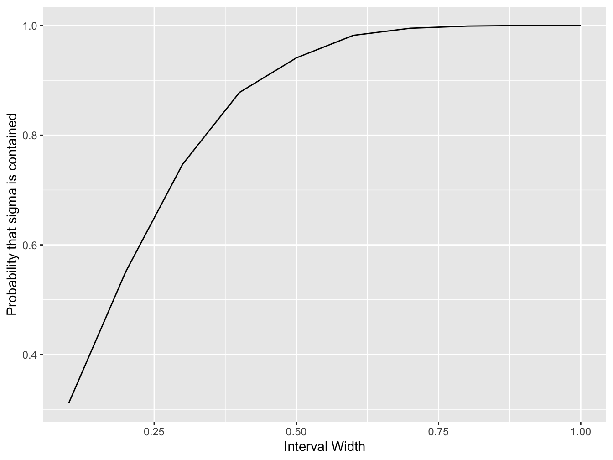
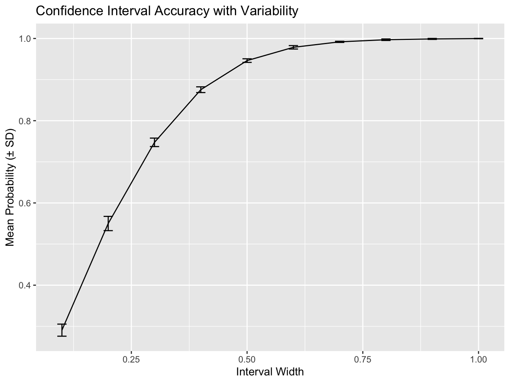

F Solution: Confidence Interval
Can you devise a way to compute a confidence interval for the population standard deviation?
You can make use of the following as a point estimate of the sample variance:
\[ s^2 = \frac{1}{n - 1}\sum_{i = 1}^n (x - \bar{x})^2 \]
which can be calculated using the sd function in R, remember the relationship between the standard deviation and variance.
#> Warning: package 'ggplot2' was built under R version 4.5.2F.1 Function Definitions
First, let’s define the functions that will be used for the confidence interval analysis:
# Function to simulate confidence intervals for standard deviation
simulate_confidence_intervals <- function(
sample_size, n_repeats, interval_widths, population_mean = 2.5,
population_sd = 1.0) {
# Initialize storage for results
n_interval_widths <- length(interval_widths)
sigma_contained <- rep(0, n_interval_widths)
# Run Monte Carlo simulations
for (replicate in 1:n_repeats) {
# Generate sample data
x <- rnorm(sample_size, mean = population_mean, sd = population_sd)
# Compute sample standard deviation
sample_sd <- sd(x)
# Test each interval width
for (j in 1:n_interval_widths) {
# Check if interval contains the true standard deviation
lower_bound <- sample_sd - 0.5 * interval_widths[j]
upper_bound <- sample_sd + 0.5 * interval_widths[j]
if ((population_sd > lower_bound) && (population_sd < upper_bound)) {
sigma_contained[j] <- sigma_contained[j] + 1
}
}
}
# Calculate probabilities
probabilities <- sigma_contained / n_repeats
return(list(
interval_widths = interval_widths,
probabilities = probabilities,
counts = sigma_contained
))
}
# Function to analyze confidence interval accuracy with multiple runs
analyze_ci_accuracy <- function(sample_size, n_repeats, interval_widths,
n_runs = 10, population_mean = 2.5, population_sd = 1.0) {
# Storage for results from multiple runs
all_probabilities <- matrix(0, nrow = n_runs, ncol = length(interval_widths))
# Run the simulation multiple times to assess variability
for (run in 1:n_runs) {
result <- simulate_confidence_intervals(sample_size, n_repeats, interval_widths,
population_mean, population_sd)
all_probabilities[run, ] <- result$probabilities
}
# Calculate mean and standard deviation for each interval width
mean_accuracy <- colMeans(all_probabilities)
sd_accuracy <- apply(all_probabilities, 2, sd)
return(list(
interval_widths = interval_widths,
mean_accuracy = mean_accuracy,
sd_accuracy = sd_accuracy,
all_probabilities = all_probabilities
))
}F.2 Main Analysis
Now we’ll use these functions to perform the confidence interval analysis:
## Define parameters
n <- 30 # sample size
mu <- 2.5 # population mean
sigma <- 1.0 # population standard deviation
nreps <- 1000 # number of Monte Carlo simulation runs
interval_width <- seq(0.1, 1.0, 0.1) # interval widths to test
# Run the simulation
results <- simulate_confidence_intervals(
sample_size = n,
n_repeats = nreps,
interval_widths = interval_width,
population_mean = mu,
population_sd = sigma
)
probability_var_contained <- results$probabilities
# create a data frame containing the variables we wish to plot
df <- data.frame(interval_width = results$interval_widths,
probability_var_contained = probability_var_contained)
# initialise the ggplot
plt <- ggplot(df, aes(x = interval_width, y = probability_var_contained))
# create a line plot
plt <- plt + geom_line()
# add a horizontal axis label
plt <- plt + xlab("Interval Width")
# create a vertical axis label
plt <- plt + ylab("Probability that sigma is contained")
# plot to screen
print(plt)
#> interval_width probability_var_contained
#> 1 0.1 0.286
#> 2 0.2 0.536
#> 3 0.3 0.736
#> 4 0.4 0.863
#> 5 0.5 0.948
#> 6 0.6 0.986
#> 7 0.7 0.992
#> 8 0.8 0.999
#> 9 0.9 0.999
#> 10 1.0 1.000F.3 Advanced Analysis with Accuracy Assessment
Let’s also analyze the variability in our confidence interval estimates:
# Analyze accuracy with multiple runs
accuracy_results <- analyze_ci_accuracy(
sample_size = n,
n_repeats = nreps,
interval_widths = interval_width,
n_runs = 10,
population_mean = mu,
population_sd = sigma
)
# Create summary table
summary_df <- data.frame(
interval_width = accuracy_results$interval_widths,
mean_accuracy = accuracy_results$mean_accuracy,
sd_accuracy = accuracy_results$sd_accuracy
)
print("Summary of Confidence Interval Accuracy:")#> [1] "Summary of Confidence Interval Accuracy:"#> interval_width mean_accuracy sd_accuracy
#> 1 0.1 0.2959 0.0141848902
#> 2 0.2 0.5529 0.0178913387
#> 3 0.3 0.7470 0.0153622915
#> 4 0.4 0.8668 0.0133815794
#> 5 0.5 0.9448 0.0058651513
#> 6 0.6 0.9790 0.0034960295
#> 7 0.7 0.9932 0.0028982753
#> 8 0.8 0.9983 0.0013374935
#> 9 0.9 0.9995 0.0007071068
#> 10 1.0 1.0000 0.0000000000# Plot mean accuracy with error bars
plt_accuracy <- ggplot(summary_df, aes(x = interval_width, y = mean_accuracy))
plt_accuracy <- plt_accuracy + geom_line()
plt_accuracy <- plt_accuracy + geom_errorbar(aes(ymin = mean_accuracy - sd_accuracy,
ymax = mean_accuracy + sd_accuracy),
width = 0.02)
plt_accuracy <- plt_accuracy + xlab("Interval Width")
plt_accuracy <- plt_accuracy + ylab("Mean Probability (± SD)")
plt_accuracy <- plt_accuracy + ggtitle("Confidence Interval Accuracy with Variability")
print(plt_accuracy)
<button class="button">
[Return to Exercise](#ex-confidence-interval)
</button>
<!--chapter:end:ci_sol.Rmd-->
# Solution: Computational Testing
## Solution: Exercise 1 {#ht-sol-ex1}
The data is:
```{.r .numberLines}
x <- c(263.9, 266.2, 266.3, 266.8, 265.0)Now construct some summary statistics and define some given parameters:
x_bar <- mean(x) # compute sample mean
sigma <- 1.65 # population standard deviation is given
mu <- 260 # population mean to be tested against
n <- length(x) # number of samplesConstruct the z-statistic:
#> [1] 7.643287Check if the z-statistic is in the critical range. First, work out what the z-value at the edge of the critical region is:
#> [1] 2.326348Thus, the z-statistic is much greater than the threshold and there is evidence to suggest the cartons are overfilled.
F.4 Solution: Exercise 2
Parameters given by the problem:
Compute the z-statistic assuming large sample assumptions apply:
#> [1] 0.3899535Now, work out the thresholds of the critical regions:
#> [1] 1.959964#> [1] -1.959964The z-statistic is outside the critical regions and therefore we do not reject the null hypothesis.
F.5 Solution: Exercise 3
z_test <- function(x, mu, popvar){
one_tail_p <- NULL
z_score <- round((mean(x) - mu) / (popvar / sqrt(length(x))), 3)
one_tail_p <- round(pnorm(abs(z_score),lower.tail = FALSE), 3)
cat(" z =", z_score, "\n",
"one-tailed probability =", one_tail_p, "\n",
"two-tailed probability =", 2 * one_tail_p)
return(list(z = z_score, one_p = one_tail_p, two_p = 2 * one_tail_p))
}
x <- rnorm(10, mean = 0, sd = 1) # generate some artificial data from a N(0, 1)
out <- z_test(x, 0, 1) # null should not be rejected!#> z = 0.588
#> one-tailed probability = 0.278
#> two-tailed probability = 0.556#> $z
#> [1] 0.588
#>
#> $one_p
#> [1] 0.278
#>
#> $two_p
#> [1] 0.556x <- rnorm(10, mean = 1, sd = 1) # generate some artificial data from a N(1, 1)
out <- z_test(x, 0, 1) # null should be rejected!#> z = 2.891
#> one-tailed probability = 0.002
#> two-tailed probability = 0.004#> $z
#> [1] 2.891
#>
#> $one_p
#> [1] 0.002
#>
#> $two_p
#> [1] 0.004F.6 Solution: Exercise 4
Define some parameters
Compute the t-statistic:
#> [1] 2.4Work out the thresholds of the critical regions:
#> [1] 2.776445#> [1] -2.776445The t-statistic is outside of the critical regions so we do not reject the null hypothesis.
F.7 Solution: Exercise 5
Define the parameters:
Compute the z-statistic:
#> [1] 23.2379Work out for the 5% significance level, the critical values:
#> [1] 1.644854There is evidence to support the claim that process \(A\) yields higher pressurisation.
F.8 Solution: Exercise 6
# Data vectors
x_A <- c(91.50, 94.18, 92.18, 95.39, 91.79, 89.07, 94.72, 89.21)
x_B <- c(89.19, 90.95, 90.46, 93.21, 97.19, 97.04, 91.07, 92.75)
# parameters based on data
x_bar_A <- mean(x_A)
s2_A <- var(x_A)
n_A <- length(x_A)
x_bar_B <- mean(x_B)
s2_B <- var(x_B)
n_B <- length(x_B)Compute the pooled variance estimator:
#> [1] 7.294654Compute the t-statistic:
#> [1] -0.3535909Work out the critical values:
#> [1] 2.144787#> [1] -2.144787Since \(|t|<2.14\) we have no evidence to reject the null hypothesis that the mean yields are equal.
Now, let us use the built-in t.test command:
out <- t.test(x = x_A, y = x_B, paired = FALSE, var.equal = TRUE,
conf.level = 0.95, mu = 0, alternative = "two.sided")
print(out)#>
#> Two Sample t-test
#>
#> data: x_A and x_B
#> t = -0.35359, df = 14, p-value = 0.7289
#> alternative hypothesis: true difference in means is not equal to 0
#> 95 percent confidence interval:
#> -3.373886 2.418886
#> sample estimates:
#> mean of x mean of y
#> 92.2550 92.7325The options paired=FALSE means this is an unpaired t-test, var.equal=TRUE forces the estimated variances to be the same (i.e. we are using a pooled variance estimator) and we are testing at 95% confidence level with an alternative hypothesis that the true difference in means is non-zero.
The p-value for the t-test is between 0 and 1. In this case, the value is around 0.72 which means the hypothesis should not be reject.
F.9 Solution: Exercise 7
Define parameters:
Compute the expected counts:
Compute the chi-squared statistic:
#> [1] 2.866667Compute the critical value form the chi-squared distribution:
#> [1] 5.991465Thus there is no evidence to reject the null hypothesis. The data provides no reason to suggest a preference for a particular door.
Now, we could have done this in R:
#>
#> Chi-squared test for given probabilities
#>
#> data: x
#> X-squared = 2.8667, df = 2, p-value = 0.2385F.10 Solution: Exercise 8
You will need the vcdExtra package to use the expand.dft command. If you are using BearPortal you don’t need to install it, but if you are running the practical on your own computer you will need to install the package install.packages("vcdExtra").
Now before we can use the expand.dft() function we need to load the package containing this function. The expand.dft command allows one to convert the frequency table into a vector of samples:
#> Warning: package 'vcdExtra' was built under R version 4.5.2#> Loading required package: vcd#> Warning: package 'vcd' was built under R version 4.5.2#> Loading required package: grid#> Loading required package: gnm#> Registered S3 methods overwritten by 'vcdExtra':
#> method from
#> pairs.table vcd
#> print.Kappa vcd#>
#> Attaching package: 'vcdExtra'#> The following objects are masked from 'package:vcd':
#>
#> pairs_diagonal_mosaic, woolf_testNow we can use the fitdistr function in the MASS package to estimate the MLE of the Poisson distribution
#> Warning: package 'MASS' was built under R version 4.5.2# fitting a Poisson distribution using maximum-likelihood
lambda_hat <- fitdistr(samples$y, densfun = 'Poisson')Let just solve this directly using R built in function. First compute the expected probabilities under the Poisson distribution using dpois to compute the Poisson pdf:
pr <- c(0, 0, 0)
pr[1] <- dpois(0, lambda = lambda_hat$estimate)
pr[2] <- dpois(1, lambda = lambda_hat$estimate)
pr[3] <- 1 - sum(pr[1:2])Then apply chisq.test:
#> Warning in chisq.test(x, p = pr): Chi-squared approximation
#> may be incorrect#>
#> Chi-squared test for given probabilities
#>
#> data: x
#> X-squared = 1.3447, df = 2, p-value = 0.5105Actually, in this case the answer is wrong(!), we need to apply an additional loss of degree of freedom to account for the use of the MLE. However, we can re-use values already computed by chisq.test:
#> X-squared
#> 1.34466#> [1] 6.634897Hence, there is no evidence to reject the null hypothesis. There is no reason to suppose that the Poisson distribution is not a plausible model for the number of accidents per week at this junction.
F.11 Universal Hypothesis Testing Function
Here’s a comprehensive function that can handle multiple types of hypothesis tests. This is a basic implementation and can be extended further based on specific requirements. There are many edge cases and additional features that could be added, but this should serve as a solid starting point. This is not the only way to implement such a function, but it covers the main types of tests:
# Universal hypothesis testing function
hypothesis_test <- function(test_type, data = NULL, ..., alpha = 0.05) {
# Initialize result list
result <- list()
if (test_type == "z_test") {
# Z-test (one-sample or two-sample)
args <- list(...)
if (length(args$mu0) > 0 && length(args$sigma) > 0) {
# One-sample z-test
x <- data
mu0 <- args$mu0
sigma <- args$sigma
alternative <- ifelse(is.null(args$alternative), "two.sided", args$alternative)
n <- length(x)
xbar <- mean(x)
z_stat <- (xbar - mu0) / (sigma / sqrt(n))
# Calculate p-value based on alternative hypothesis
if (alternative == "two.sided") {
p_value <- 2 * (1 - pnorm(abs(z_stat)))
h0 <- paste("H0: μ =", mu0)
h1 <- paste("H1: μ ≠", mu0)
} else if (alternative == "greater") {
p_value <- 1 - pnorm(z_stat)
h0 <- paste("H0: μ ≤", mu0)
h1 <- paste("H1: μ >", mu0)
} else if (alternative == "less") {
p_value <- pnorm(z_stat)
h0 <- paste("H0: μ ≥", mu0)
h1 <- paste("H1: μ <", mu0)
}
result <- list(
test_name = "One-sample Z-test",
null_hypothesis = h0,
alternative_hypothesis = h1,
test_statistic = z_stat,
p_value = p_value,
alpha = alpha,
conclusion = ifelse(p_value < alpha, "Reject H0", "Fail to reject H0"),
sample_mean = xbar,
sample_size = n
)
}
} else if (test_type == "t_test") {
# T-test (one-sample, two-sample, or paired)
args <- list(...)
if (!is.null(args$y)) {
# Two-sample t-test
x <- data
y <- args$y
alternative <- ifelse(is.null(args$alternative), "two.sided", args$alternative)
paired <- ifelse(is.null(args$paired), FALSE, args$paired)
if (paired) {
# Paired t-test
diff <- x - y
n <- length(diff)
mean_diff <- mean(diff)
sd_diff <- sd(diff)
t_stat <- mean_diff / (sd_diff / sqrt(n))
df <- n - 1
if (alternative == "two.sided") {
p_value <- 2 * (1 - pt(abs(t_stat), df))
h0 <- "H0: μd = 0"
h1 <- "H1: μd ≠ 0"
} else if (alternative == "greater") {
p_value <- 1 - pt(t_stat, df)
h0 <- "H0: μd ≤ 0"
h1 <- "H1: μd > 0"
} else if (alternative == "less") {
p_value <- pt(t_stat, df)
h0 <- "H0: μd ≥ 0"
h1 <- "H1: μd < 0"
}
result <- list(
test_name = "Paired t-test",
null_hypothesis = h0,
alternative_hypothesis = h1,
test_statistic = t_stat,
degrees_of_freedom = df,
p_value = p_value,
alpha = alpha,
conclusion = ifelse(p_value < alpha, "Reject H0", "Fail to reject H0"),
mean_difference = mean_diff
)
} else {
# Two-sample t-test (assuming equal variances)
n1 <- length(x)
n2 <- length(y)
mean1 <- mean(x)
mean2 <- mean(y)
var1 <- var(x)
var2 <- var(y)
# Pooled variance
pooled_var <- ((n1 - 1) * var1 + (n2 - 1) * var2) / (n1 + n2 - 2)
se <- sqrt(pooled_var * (1/n1 + 1/n2))
t_stat <- (mean1 - mean2) / se
df <- n1 + n2 - 2
if (alternative == "two.sided") {
p_value <- 2 * (1 - pt(abs(t_stat), df))
h0 <- "H0: μ1 = μ2"
h1 <- "H1: μ1 ≠ μ2"
} else if (alternative == "greater") {
p_value <- 1 - pt(t_stat, df)
h0 <- "H0: μ1 ≤ μ2"
h1 <- "H1: μ1 > μ2"
} else if (alternative == "less") {
p_value <- pt(t_stat, df)
h0 <- "H0: μ1 ≥ μ2"
h1 <- "H1: μ1 < μ2"
}
result <- list(
test_name = "Two-sample t-test",
null_hypothesis = h0,
alternative_hypothesis = h1,
test_statistic = t_stat,
degrees_of_freedom = df,
p_value = p_value,
alpha = alpha,
conclusion = ifelse(p_value < alpha, "Reject H0", "Fail to reject H0"),
sample1_mean = mean1,
sample2_mean = mean2
)
}
} else {
# One-sample t-test
x <- data
mu0 <- ifelse(is.null(args$mu0), 0, args$mu0)
alternative <- ifelse(is.null(args$alternative), "two.sided", args$alternative)
n <- length(x)
xbar <- mean(x)
s <- sd(x)
t_stat <- (xbar - mu0) / (s / sqrt(n))
df <- n - 1
if (alternative == "two.sided") {
p_value <- 2 * (1 - pt(abs(t_stat), df))
h0 <- paste("H0: μ =", mu0)
h1 <- paste("H1: μ ≠", mu0)
} else if (alternative == "greater") {
p_value <- 1 - pt(t_stat, df)
h0 <- paste("H0: μ ≤", mu0)
h1 <- paste("H1: μ >", mu0)
} else if (alternative == "less") {
p_value <- pt(t_stat, df)
h0 <- paste("H0: μ ≥", mu0)
h1 <- paste("H1: μ <", mu0)
}
result <- list(
test_name = "One-sample t-test",
null_hypothesis = h0,
alternative_hypothesis = h1,
test_statistic = t_stat,
degrees_of_freedom = df,
p_value = p_value,
alpha = alpha,
conclusion = ifelse(p_value < alpha, "Reject H0", "Fail to reject H0"),
sample_mean = xbar,
sample_size = n
)
}
} else if (test_type == "chi_squared_test") {
# Chi-squared test (goodness of fit or independence)
args <- list(...)
if (!is.null(args$expected)) {
# Goodness of fit test
observed <- data
expected <- args$expected
chi_stat <- sum((observed - expected)^2 / expected)
df <- length(observed) - 1
p_value <- 1 - pchisq(chi_stat, df)
result <- list(
test_name = "Chi-squared goodness of fit test",
null_hypothesis = "H0: Data follows the specified distribution",
alternative_hypothesis = "H1: Data does not follow the specified distribution",
test_statistic = chi_stat,
degrees_of_freedom = df,
p_value = p_value,
alpha = alpha,
conclusion = ifelse(p_value < alpha, "Reject H0", "Fail to reject H0"),
observed = observed,
expected = expected
)
} else {
# Test of independence (contingency table)
contingency_table <- data
# Calculate expected frequencies
row_totals <- rowSums(contingency_table)
col_totals <- colSums(contingency_table)
total <- sum(contingency_table)
expected <- outer(row_totals, col_totals) / total
chi_stat <- sum((contingency_table - expected)^2 / expected)
df <- (nrow(contingency_table) - 1) * (ncol(contingency_table) - 1)
p_value <- 1 - pchisq(chi_stat, df)
result <- list(
test_name = "Chi-squared test of independence",
null_hypothesis = "H0: Variables are independent",
alternative_hypothesis = "H1: Variables are not independent",
test_statistic = chi_stat,
degrees_of_freedom = df,
p_value = p_value,
alpha = alpha,
conclusion = ifelse(p_value < alpha, "Reject H0", "Fail to reject H0"),
observed = contingency_table,
expected = expected
)
}
}
class(result) <- "hypothesis_test"
return(result)
}
# Print method for hypothesis_test objects
print.hypothesis_test <- function(x) {
cat("\n", x$test_name, "\n")
cat(rep("=", nchar(x$test_name) + 2), "\n\n", sep = "")
cat("Hypotheses:\n")
cat(" ", x$null_hypothesis, "\n")
cat(" ", x$alternative_hypothesis, "\n\n")
cat("Test Statistics:\n")
cat(" Test statistic:", round(x$test_statistic, 4), "\n")
if (!is.null(x$degrees_of_freedom)) {
cat(" Degrees of freedom:", x$degrees_of_freedom, "\n")
}
cat(" P-value:", round(x$p_value, 6), "\n")
cat(" Significance level (α):", x$alpha, "\n\n")
cat("Conclusion:\n")
cat(" ", x$conclusion, "\n")
if (x$p_value < x$alpha) {
cat(" There is sufficient evidence to reject the null hypothesis.\n")
} else {
cat(" There is insufficient evidence to reject the null hypothesis.\n")
}
}F.12 Example Usage
Here are examples of how to use the universal hypothesis testing function:
# Example 1: One-sample z-test (Exercise 1 data)
milk_data <- c(263.9, 266.2, 266.3, 266.8, 265.0)
z_result <- hypothesis_test("z_test", data = milk_data, mu0 = 260, sigma = 1.65,
alternative = "greater", alpha = 0.01)
print(z_result)#>
#> One-sample Z-test
#> ===================
#>
#> Hypotheses:
#> H0: μ ≤ 260
#> H1: μ > 260
#>
#> Test Statistics:
#> Test statistic: 7.6433
#> P-value: 0
#> Significance level (α): 0.01
#>
#> Conclusion:
#> Reject H0
#> There is sufficient evidence to reject the null hypothesis.# Example 2: One-sample t-test (Exercise 4 data)
# Simulating data with mean 5.64 and variance 0.05
set.seed(123)
process_data <- rnorm(5, mean = 5.64, sd = sqrt(0.05))
t_result <- hypothesis_test("t_test", data = process_data, mu0 = 5.4,
alternative = "two.sided", alpha = 0.05)
print(t_result)#>
#> One-sample t-test
#> ===================
#>
#> Hypotheses:
#> H0: μ = 5.4
#> H1: μ ≠ 5.4
#>
#> Test Statistics:
#> Test statistic: 3.4929
#> Degrees of freedom: 4
#> P-value: 0.025056
#> Significance level (α): 0.05
#>
#> Conclusion:
#> Reject H0
#> There is sufficient evidence to reject the null hypothesis.# Example 3: Chi-squared goodness of fit test (Exercise 7 data)
door_counts <- c(23, 36, 31)
expected_counts <- rep(30, 3) # Equal preference expected
chi_result <- hypothesis_test("chi_squared_test", data = door_counts,
expected = expected_counts, alpha = 0.05)
print(chi_result)#>
#> Chi-squared goodness of fit test
#> ==================================
#>
#> Hypotheses:
#> H0: Data follows the specified distribution
#> H1: Data does not follow the specified distribution
#>
#> Test Statistics:
#> Test statistic: 2.8667
#> Degrees of freedom: 2
#> P-value: 0.238513
#> Significance level (α): 0.05
#>
#> Conclusion:
#> Fail to reject H0
#> There is insufficient evidence to reject the null hypothesis.